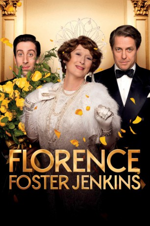
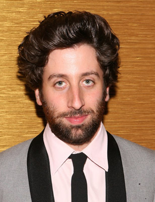
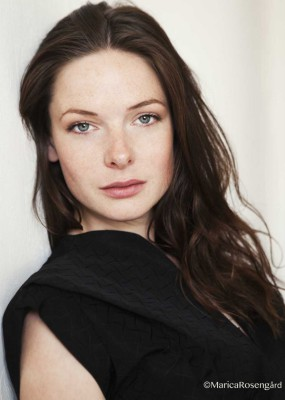
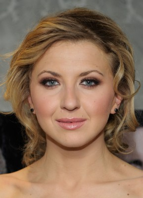
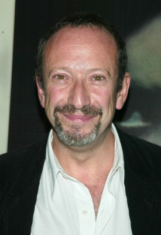
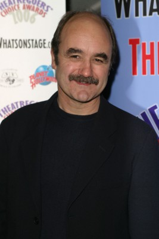
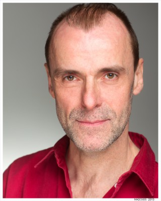
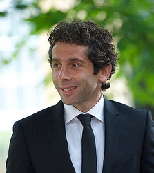
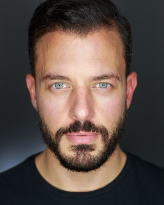

#6281 Florence Foster Jenkins
Auszeichnungen: für 2 Oscars nominiert 1 BAFTA-Awards gewonnen
 
 IMDB-Wertung: 6.9 / 10
IMDB-Wertung: 6.9 / 10  Tomatometer: 88
Tomatometer: 88  Metascore: 0
Metascore: 0 
Das Biopic Florence Foster Jenkins erzählt die wahre Geschichte der New Yorker Erbin Florence Foster Jenkins (Meryl Streep), die trotz ihres mangelnden Talents davon träumt, eine berühmte Opernsängerin zu werden. Ihr Lebensgefährte und Manager, St. Clair Bayfield (Hugh Grant), der ihr all die Jahre wohlmeinend die Wahrheit über ihren schiefen Gesang verschwiegen hatte, gerät plötzlich in arge Schwierigkeiten, als Florence beschließt, vor einem großen Publikum in der renommierten Carnegie Hall aufzutreten.
Jahr: 2016
Dauer: 110 Minuten
FSK: 0
Land: England Studio: Constantin FilmTonspuren: DTS - ,
Untertitel:
Auflösung: 1080p (1920x808) Größe: 5632 MB
Genre: Drama, Musik, Komödie, Biographie
Regisseur:  Stephen Frears
Stephen Frears
Drehbuch: Philip Gröning
Soundtrack:
Darsteller:
 Meryl Streep als Florence Foster Jenkins
Meryl Streep als Florence Foster Jenkins Hugh Grant als St Clair Bayfield
Hugh Grant als St Clair Bayfield-  Simon Helberg als Cosmé McMoon
-  Rebecca Ferguson als Kathleen
-  Nina Arianda als Agnes Stark
 Stanley Townsend als Phineas Stark
Stanley Townsend als Phineas Stark-  Allan Corduner als John Totten
 Christian McKay als Earl Wilson
Christian McKay als Earl Wilson-  David Haig als Carlo Edwards
 John Sessions als Dr. Hermann
John Sessions als Dr. Hermann John Kavanagh als Arturo Toscanini
John Kavanagh als Arturo Toscanini- Paola Dionisotti als Baroness Le Feyre
- Rhoda Lewis als Mrs Patsy Snow
- David Mills als Augustus Corbin
- David Menkin als Carlton Smith
- Sid Phoenix als Corporal Jones
 Josh O'Connor als Donaghy
Josh O'Connor als Donaghy Nathan Osgood als Stagehand
Nathan Osgood als Stagehand- Caolan Byrne als Stagehand 2
 Ewan Stewart als Colonel
Ewan Stewart als Colonel- Greg Lockett als Chuck
- Cameron Cuffe als Gino
- Georgina Morton als Pearl
- James Sobol Kelly als Edgar, Diner
- Dar Dash als Antonio
- Grant Gillespie als Brooklyn Man
-  Philip Rosch als Archie the Doorman
-  Elliot Levey als Edgar Booth Cunningham, Jr.
- Danny Mahoney als Clifford B. Thornton III
- Mark Arnold als Cole Porter
- Rosy Benjamin als Corbin's Gang
- Oliver King als Corbin's Gang
- Charles Streeter als Corbin's Gang
- Madeleine Knight als Corbin's Gang
- Stephanie Lane als Corbin's Gang
- Adele Armas als Opera Audience , uncredited
- Pamela Ashton als Woman at news stand , uncredited
- Richard Bevan als Stubbs , uncredited
- Marie Borg als Girl on staircase , uncredited
 Dilyana Bouklieva als Opera Audience , uncredited
Dilyana Bouklieva als Opera Audience , uncredited- Flor Ferraco als Carnegie Hall Guest , uncredited
- Neve Gachev als Friend of Florence , uncredited
- David Goodson als Carnegie Hall Guest , uncredited
- Billy Griffin Jr. als Journalist , uncredited
- Chris Hembury als Businessman , uncredited
- Tony Honickberg als Mr Levi , uncredited
 Patrick Carney Junior als Passerby , uncredited
Patrick Carney Junior als Passerby , uncredited- Solomon Taiwo Justified als Soldier , uncredited
- Phelim Kelly als Verdi Husband , uncredited
-  Jorge Leon Martinez als Airborne Sergeant , uncredited
Datei: X:\2016(A-F)\Florence Foster Jenkins (2016, FSK0, 1920x808).mkv seit 31.05.2017
Festplatte: HD 2016(A-Z)
 Es gibt insgesamt 147 Filme in der Gruppe '2016(A-F)'
Es gibt insgesamt 147 Filme in der Gruppe '2016(A-F)'